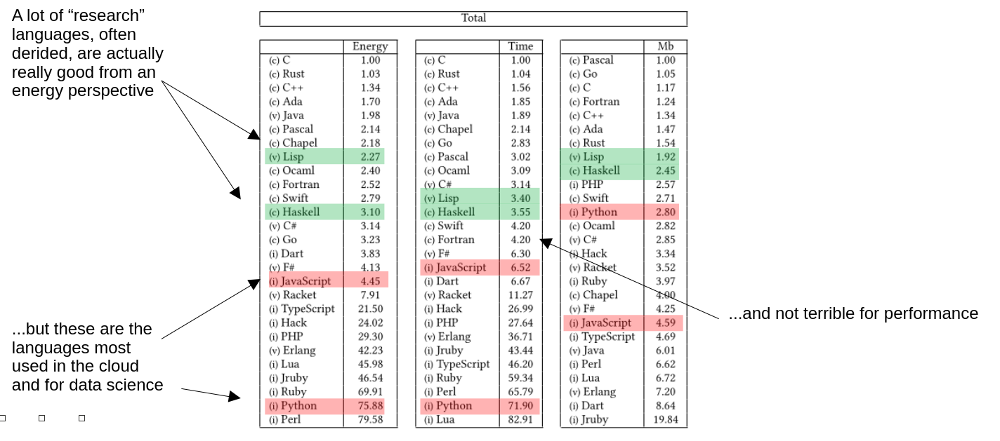

I’ve recently been thinking about low-power computing, from AI and
data centres down to sensors, as part of a new initiative the
University is considering. It’s easy to forget the resource
footprint of our computing systems – especially those that are “out
of sight, out of mind” in the cloud – but there’s growing evidence
that their growth threatens the renewable energy transition. Some of
the figures for AI electricity and water usage are astonishing.
One aspect of this is the effect of choice of programming language.
I can across some work from 2017 on this:
Rui Pereira, Marco Couto, Francisco Ribeiro, Rui Rua, Cunha Jácome,
João Paulo Fernandes, and João Saraiva. Energy Efficiency across
Programming Languages: How Do Energy, Time, and Memory Relate? In
Proceedings of the 10th ACM SIGPLAN International Conference on
Software Language Engineering. 2017.
The authors compare 13 benchmarks run in 27 different languages,
with the benchmarks being chosen widely to avoid being biased by
numeric performance. I was expecting some patterns: compiled
languages doing better on performance, memory, and energy usage, for
example. But I wasn’t expecting exactly how widely the figures
diverged, or some of the details.
The following table is from the paper, annotated by me. The figures
are normalised against the best result in each category (so the top
language has value 1, and so on).

The two most-used languages for web application, Python and
JavaScript, perform uniformly pretty badly: 75 times C’s energy
usage, in Python’s case. But although JavaScript does substantially
better on energy (only a factor of 4), TypeScript – which is
usually thought of as JavaScript with type pre-processing –
requires 21 times C’s energy, or 5 times JavaScript’s. Why is that?
– I can’t think of a reason.
But the real surprise was that “research” languages like Haskell and
Lisp both hold up well: twice C’s energy, in Lisp’s case. I don’t
think that would surprise modern Lisp programmers, who are used to
their compilers’ efficiencies – but it would surprise someone used
only to the “hearsay” about Lisp. The same for Haskell, actually,
whose modern compilers really leverage the extra structure. When you
consider that both those languages are pretty much dependent on
garbage collection and so are doing substantially more work than the
equivalent C program, it’s impressive.
(Also look in the table for Racket, consistently lower than Lisp
despite their close similarities. I suspect this is a compiler
optimisation issue more than anything else.)
This work clearly isn’t complete or definitive. Clojure is entirely
missing, as is Scala, and there will have been compiler improvements
since 2017 for the languages with the most active developer
communities. But it’s still quite sobering that the differences are
so wide, and that we’ve chosen to push languages that exacerbate
energy usage rather than managing it.